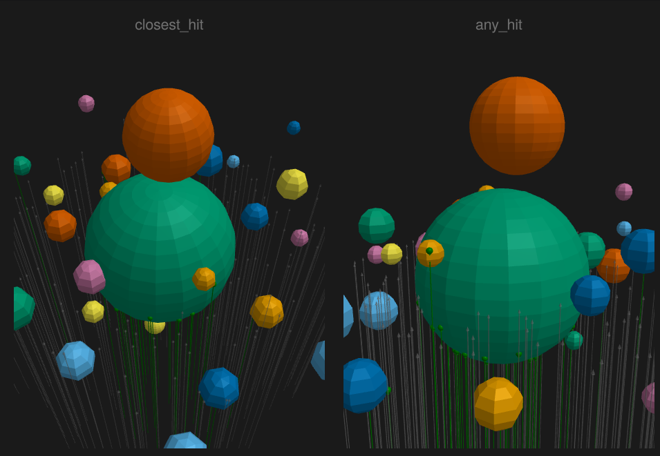

I'm excited to announce Raycore.jl, a high-performance ray-triangle intersection engine with Bounding Volume Hierarchy (BVH) acceleration, designed for both CPU and GPU execution in Julia. Raycore will power a new raytracing backend for Makie, bringing photorealistic rendering to the Makie ecosystem with the familiar Makie API. We factored out the ray intersection engine, since it can be used in many other fields like simulating light transport, heat transfer, or acoustig propagation and many other.
You might wonder: why build yet another ray tracer? The answer lies in Julia's unique strengths, the opportunities they create, and the flexibility we gain from having complete control over the rendering implementation.
High-level language with performance close to C/C++ - Write readable code that runs fast
Great GPU support - Single codebase runs on CUDA, AMD, Metal, oneAPI, and OpenCL via KernelAbstractions.jl
Multiple dispatch for different geometries, algorithms, and materials - Extend the system cleanly without modifying core code
Pluggable architecture for new features - Add custom materials, sampling strategies, or acceleration structures
One of the best languages to write out math - The code looks like the equations you'd write on paper
Julia isn't perfect, and there are certainly challenges:
Long compile times for first use - The first run of a function triggers JIT compilation
GPU code still has some rough edges - Complex kernels require careful attention to avoid allocations and GPU-unfriendly constructs
Not all backends work yet - I've only tested AMDGPU and OpenCL.jl. Metal.jl and OpenCL on macOS don't work yet, though I think it's just a matter of time to support all backends.
In practice, compile times aren't as bad as they might sound. You keep a Julia session running and only pay the compilation cost once. There's also ongoing work on precompilation that could reduce these times to near-zero in the future and compile most kernels ahead of time. For GPU code, better tooling for detecting and fixing issues is on the horizon, along with improved error messages when problematic LLVM code is generated.
The flexibility to write a high-performance ray tracer in a high-level language opens up exciting possibilities:
Use automatic differentiation to get gradients for training ML models
Plug in new optimizations seamlessly without fighting a type system or rewriting core algorithms
Democratize working on high-performance ray tracing - contributions don't require C++ expertise and the code base is fairly small
Rapid experimentation - test new ideas without lengthy compile cycles
Raycore is a focused library that does one thing well: fast ray-triangle intersections with BVH acceleration. It provides the building blocks for ray tracing applications without imposing a particular rendering architecture.
Fast BVH construction and traversal
CPU and GPU support via KernelAbstractions.jl
Analysis tools: centroid calculation, illumination analysis, view factors for radiosity
Makie integration for visualization
Thanks to the bounding volume hierarchy, the intersection performance scales relatively well with the scene size.
using Raycore, GeometryBasics, BenchmarkTools, Markdown, Bonito
ray = Raycore.Ray(o=Point3f(0, 0, -5), d=Vec3f(0, 0, 1))
results = map([1, 1000, 10000]) do n
spheres = [Tesselation(Sphere(randn(Point3f) .* 1000f0, 0.5f0), 32) for _ in 1:n]
bvh = Raycore.BVH(spheres)
tclosest = BenchmarkTools.@belapsed Raycore.closest_hit($bvh, $ray)
ntriangles = length(bvh.primitives)
# use closest hit for time per triangle, since it needs to traverse more triangles
tpt = string(round((tclosest/ntriangles)*1e9, digits=5), "ns")
tcloseststr = string(round(tclosest * 1e6, digits=2), "μs")
(triangles=ntriangles, closest=tcloseststr, time_per_triangle_ns=tpt)
end
DOM.div(Bonito.Table(results))| triangles | closest | time_per_triangle_ns |
|---|---|---|
| 1922 | 0.01μs | 0.0064ns |
| 1922000 | 0.58μs | 0.0003ns |
| 19220000 | 4.01μs | 0.00021ns |
Since you can run thousands of ray intersections in parallel on the GPU, we get pretty great performance per ray intersection. The below benchmark is from the GPU tutorial, which generates roughly 400x700px * 4 samples x 8 shadow rays per 3 lights + 1 reflection ray which can spawn up to 8 shadow rays, so around 40mio rays, which we can do in an optimized GPU kernel in around 43ms: 
The documentation includes several hands-on tutorials that build from basics to advanced GPU optimization:
Learn the fundamentals of ray-triangle intersection, BVH construction, and visualization.

Build a complete ray tracer from scratch with shadows, materials, reflections, and tone mapping analogous to the famous Ray Tracing in one Weekend.

Port the ray tracer to GPU and learn optimization techniques: loop unrolling, tiling, and wavefront rendering. Includes comprehensive benchmarks comparing different approaches.
Calculate view factors, illumination, and centroids for radiosity and thermal analysis applications.

Install Raycore.jl from the Julia package manager:
using Pkg
Pkg.add("Raycore")Then check out the interactive tutorials to start building your first ray tracer!
We have some plans for further improving the Package in the future:
Makie raytracing backend - Bringing photorealistic rendering to the Makie ecosystem
Advanced acceleration structures - Explore alternatives to BVH like kd-trees or octrees for specific use cases
GPU memory optimizations - Reduce memory footprint for larger scenes
Improved precompilation - Further reduce first-run latency
Further optimize performance - It would be great to have as many people as possible work on optimizing this to the core :)
Contributions are welcome! The codebase is designed to be approachable, and the Julia community is friendly and helpful.
Raycore.jl was split out from Trace.jl, originally created by Anton Smirnov. Trace.jl will soon be renamed to Hikari and released as the main ray tracing implementation built on top of Raycore, providing a complete path tracing framework. This project builds on the excellent work of the Julia GPU ecosystem, particularly KernelAbstractions.jl for portable GPU programming and of course all the GPU backend packages. Special thanks to everyone who helped shape Raycore. Parts of this work was made possible by an investment of the Sovereign Tech Agency and most of the optimization and GPU work has been funded by Muon Space.
I'm excited to see what can be build with Raycore.jl and how far we can push the performance as a community!